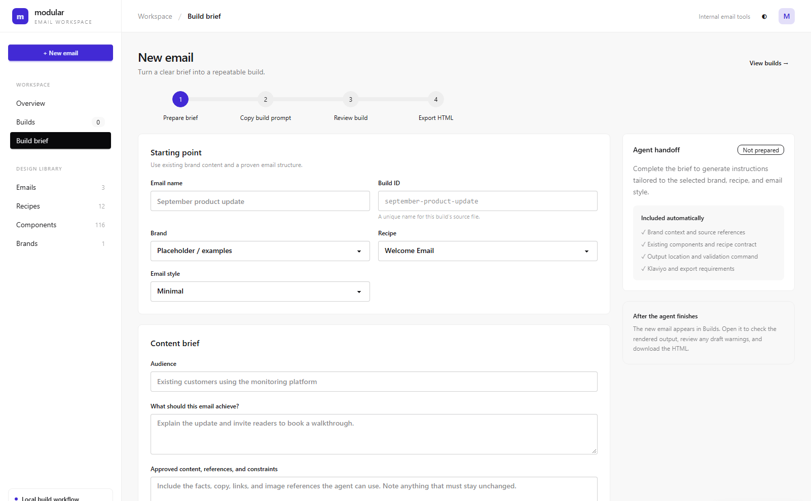
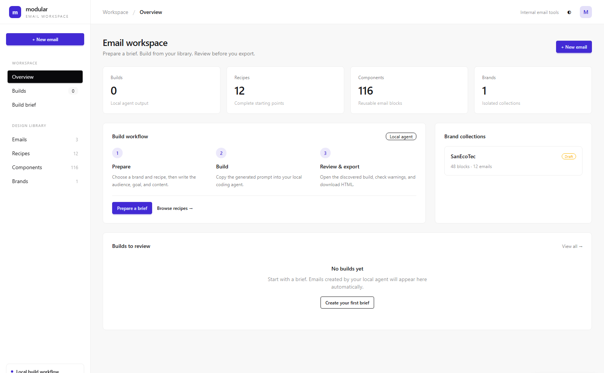
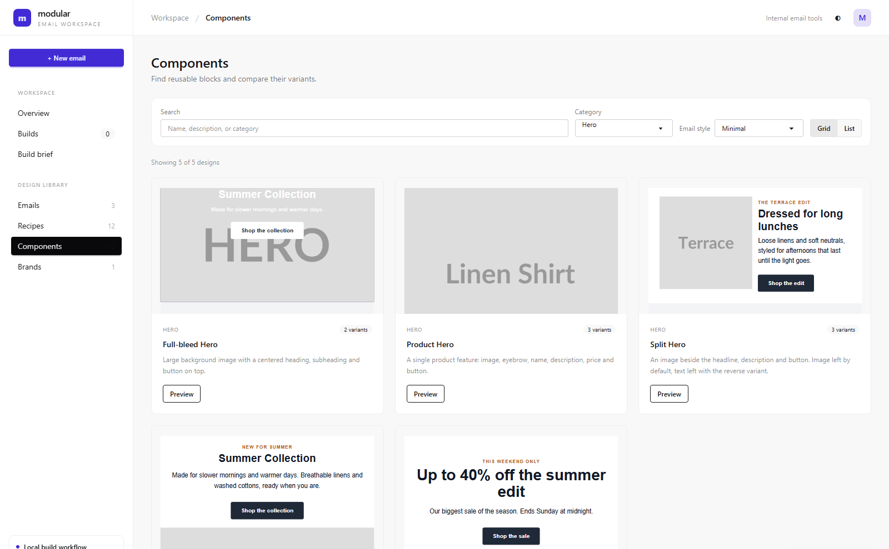
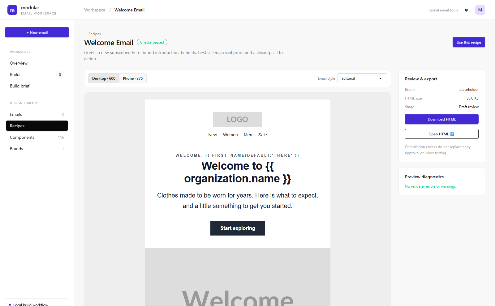
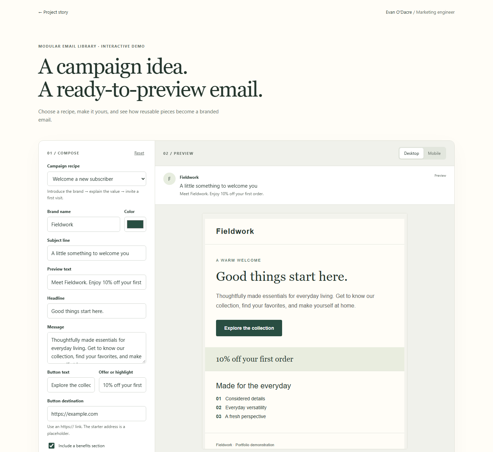

01
Start with the campaign context.
Choose a brand, recipe, and style, then define the audience, objective, and approved content. The workspace prepares instructions for a local coding agent.

A modular email production system for building, validating, and exporting branded Klaviyo-ready emails.
Try the interactive demo ↗
Internal production workspace — local coding-agent workflow, with manual HTML handoff to Klaviyo.
Building branded emails from scratch repeats design and development work. It also makes consistency and production checks harder to maintain across campaigns.
I separated brand identity, content, and presentation into reusable tokens, components, variants, layouts, sections, recipes, and templates. A Laravel workspace organizes brands, emails, components, recipes, and builds.
Workflow
Campaign brief → Brand & recipe → Agent-assisted build → MJML → Validate → Preview → Export
Inside the actual tool
Three screens from the local application, showing the decisions behind the workflow. Select any screenshot to take a closer look.
Choose a brand, recipe, and style, then define the audience, objective, and approved content. The workspace prepares instructions for a local coding agent.

Searchable components, category filters, and rendered previews make reusable blocks easier to find. Variants offer different treatments without rebuilding the underlying component.

Desktop and phone previews sit beside renderer diagnostics, HTML size, and export actions. This recipe preview shows a reusable starting point; agent-produced builds use the same review flow.


Try it yourself
Choose a welcome or product-launch recipe, customize the copy and brand color, preview it on mobile, and download the HTML. A simplified browser demo of the ideas behind the full library.
This public demo uses browser-side HTML templates and basic checks. It illustrates the workflow without running the full MJML engine.
Try the email builder →Reusable structures reduce repeated production work, while validation helps catch issues before an email reaches the platform. Campaign content can change without rebuilding the brand system each time.
Laravel, PHP, Node.js, Nunjucks, MJML, Tailwind, JavaScript, and Vite.
Created a reusable workspace for producing validated, branded, responsive email HTML. The output is exported for manual import into Klaviyo; the system does not send campaigns or provide automated Klaviyo delivery. AI assistance comes from a local coding agent, rather than an AI API or SaaS product.